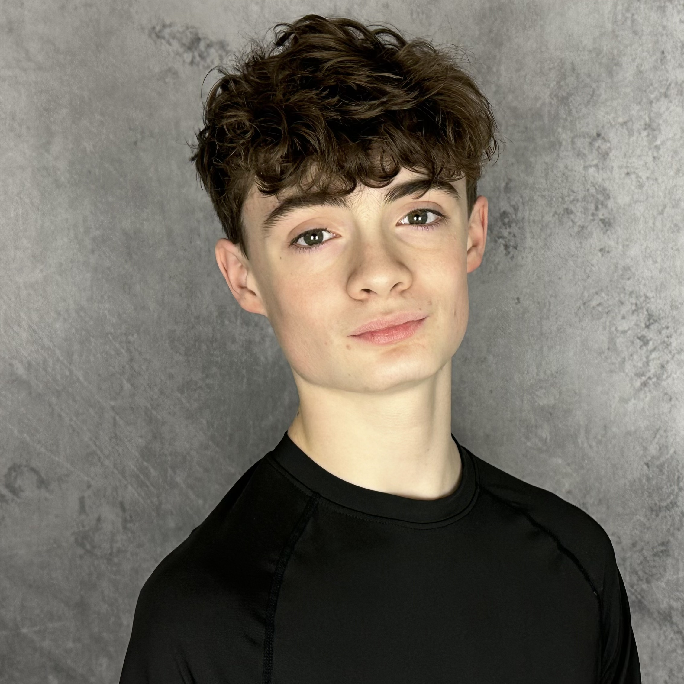

Dance · Musical Theatre · College Portfolio
Milo McDonald
Dancer, Actor & Vocalist
A classically trained dancer and triple-threat performer — dance, voice, and stage.

A classically trained dancer and triple-threat performer — dance, voice, and stage.

Milo McDonald is a 15-year-old rising sophomore and versatile triple-threat performer from Ashland, Ohio. He trains with Marden Ramos and Sarah Horrigan-Ramos at Richland Academy and has participated in ballet intensives with BalletMet and Tulsa Ballet. Drawn to the combination of movement, music, and storytelling, Milo performs across dance, musical theater, voice, and acting. He is a strong tenor, advanced pianist and stand-up bassist, and fluent Spanish speaker.
Milo's dance training is rooted in classical ballet and spans tap, jazz, modern, lyrical, acrobatics, and musical-theater dance. He is drawn to movement that combines technical precision, musicality, athleticism, and storytelling. He approaches dance not simply as a series of steps, but as a way to communicate character, emotion, and individuality.


Milo is a strong Baritenor with an expressive head voice and 10 years of vocal training, including classical technique with Lori Turner. He has performed in more than 30 productions and enjoys roles that combine humor, vulnerability, physicality, and strong storytelling. His musical background includes advanced piano, stand-up bass, and perfect pitch.
A full performance resume is available for download — including formal training history, coaches, and complete production credits.
Upload a PDF resume and link it below, or replace with an embedded resume image.
Download Full Resume (PDF)A mix of performance and studio photography across dance and musical theatre.
.jpg)
.png)
.jpg)
.jpg)
.jpg)


For audition inquiries, program information, or letters of recommendation, please reach out directly.